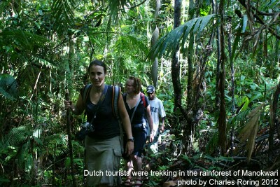

New Guinea is the largest tropical island in the world. It has attracted the attention of world explorers since hundreds of years ago. Scientists such as Alfred Russel Wallace (1858) came to Dorey bay in Manokwari and trekked the rainforest of the region to find birds of paradise. The official website of Papua Insects Foundation has got some information about Prince Leopold III and Princess Astrid from Belgium who visited Manokwari, and Arfak mountains from December 1928 to May 1929.
Today tens of species of birds of paradise are still being hunted for their beautiful feather. They are traded and collected by wealthy people in Indonesia. Preserved skin of birds of paradise are often found in the living rooms of high ranking government officials or businessmen. To curb the hunting of birds of paradise and the logging of tropical rainforest, I introduce trekking trips to tourists who are interested in taking tours in the jungle. When tourists go trekking in the rainforest of West Papua, they will be guided by some Papuan villagers. I will accompany them as an interpreter. It is not only birds of paradise which trekkers will see. Our rainforest is high in bio-diversity. Deers, boars, cuscus, monitor lizards and kangaroo also live in the jungle.
Dutch tourists were hiking in rainforestHere are some destinations that I promote:
- Klasow valley in Sorong regency. It is a recommended destination for visitors who want to combine their scuba diving/ snorkeling trip in Raja Ampat with rainforest tour in New Guinea.
- Mountain Range of Tambrauw - this is an important destination in the world for anybody who is wants to know everything about tropical rainforest.
- Dopi river. It is a 3-hour walk from Manokwari town. A camp by the river for hikers or trekkers has been built for tourists.
- Asai river. It is a 1-hour car trip from Manokwari town. After arriving at the bridge of Asai, travelers can start trekking by walking along the banks of the river. There is a waterfall located deep in the jungle.
- Susnguakti forest in Manokwari - you have to be physically fit to trek the steep slopes of this mountain range.
- Fly from your country to Indonesia's capital - Jakarta.
- Take a flight to Sorong city (for points 1 and 2) or Manokwari city (for points 3, 4, 5). Contact me by email to peace4wp@gmail.com
- I will meet you at the airport or at the hotel where you stay to arrange your trekking trips to the above destinations.